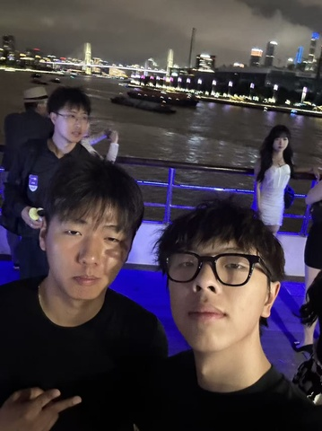

基本信息
备注
common app的截图当作resume，不是很用心
1-page Resume (Encouraged，PDF格式，中英文均可)
Portfolio or Additional Files (Optional，PDF或视频)
请把文件名命为：first name_Last name_netid
请上传一张自己的照片，普通的生活照就可以！（只是为了面试的时候我们可以把你认出来）

查看原图
查看原图
通用问题部分
为什么想要加入CSSA？
CSSA作为康奈尔最大的华人组织是一个特别有吸引力的平台。CSSA往年做的活动也特别吸引我——奇葩说、新说唱、摄影展都和我自己的兴趣及过往经历息息相关。我希望加入CSSA，是因为这里不仅能让我继续做自己喜欢的事，也能让我结识更多志同道合的朋友。
你心目中CSSA是个什么样的组织？
在我心里CSSA是一个包容性特别强的组织。第一印象就是每个人都特别好。当时在北京场当志愿者认识了Shelly学姐，David学长，还有King学长。感觉每个人都特别的无私，愿意给我们这些新人说很多自己的经验。同时对我来说特别重要的一点就是CSSA的学长学姐都特别会玩。
加入CSSA之后，你最想在康奈尔校园内实现的事情是什么？
目前有一些想法。因为我自己特别喜欢吃的，我们可以计划一些野餐活动在湖边。其次我特别喜欢摄影展，奇葩说，还有新说唱。特别希望今年可以继续这些活动。再来因为我是一个party person，希望也可以多组织一些酒局（我带了不同的酒桌游戏卡牌😂）。
内联部
第一志愿为什么选择这个部门？
选择内联部是因为我个人的vibe特别匹配。我是一个特别喜欢交朋友和social的人。同时我过去在自己的高中也会组织很多活动，包括这次来康奈尔也已经和我另一个朋友组织了一场火锅排队。我希望可以在内联部认识更多的人，然后策划一些让大家都可以加入的活动。
宣传部
如果申请宣传部，我们强烈建议提交一份作品集（max 2 pages）。
第二志愿为什么选择这个部门？
因为自己特别喜欢摄影也拍过很多作品展，所以觉得自己的技能应该可以帮到大家。平时自己特别喜欢拍摄人文类主题和人像，所以刚好可以帮助记录CSSA的各种活动。
是否接受部门调剂？
是
Any other questions or comments?
I LUV CSSA